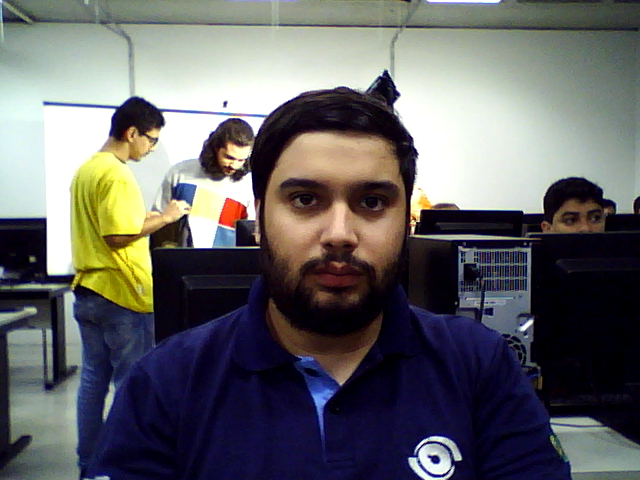
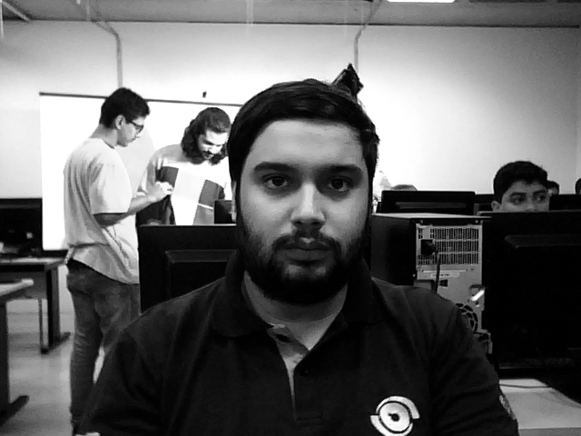
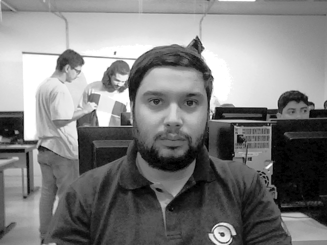
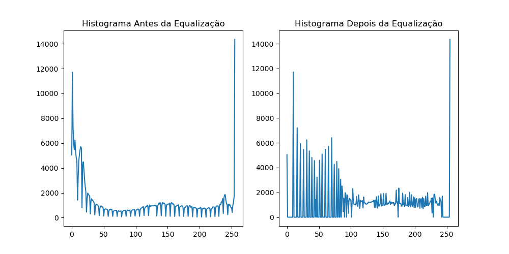
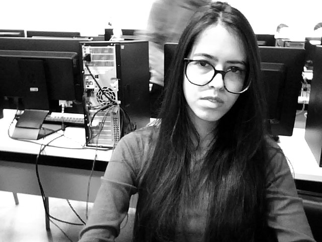
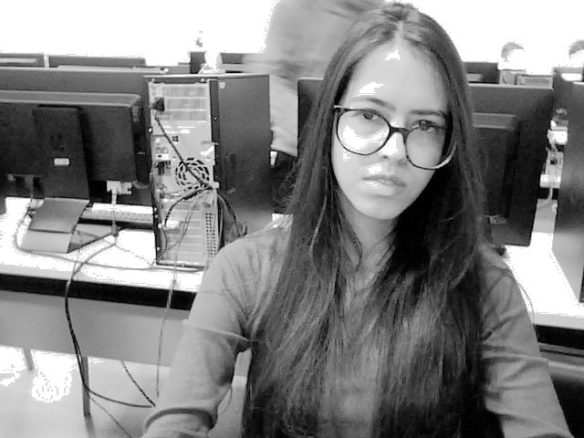
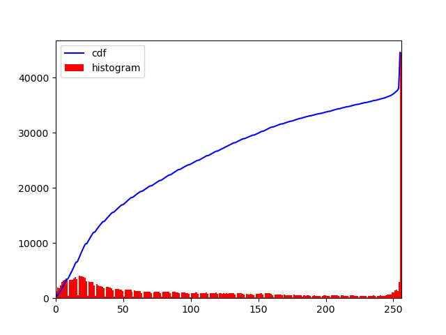
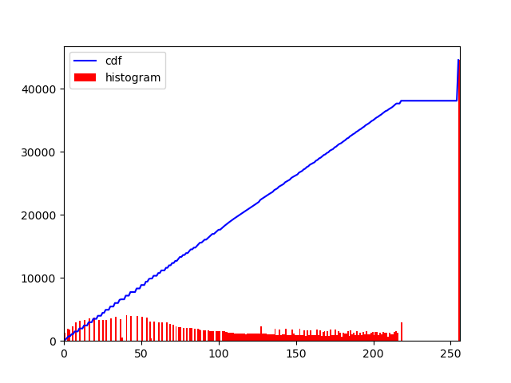
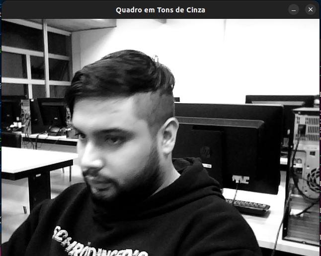
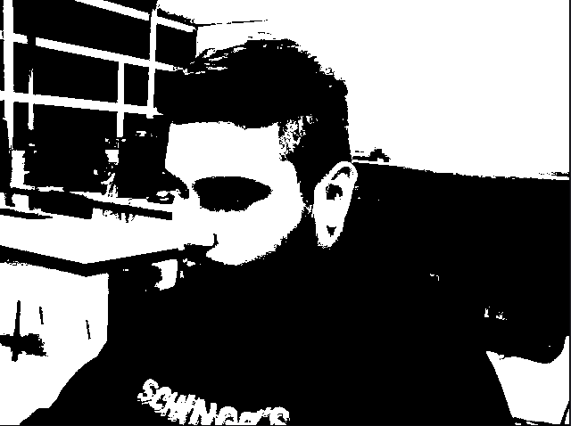

Este relatório tem como objetivo descrever a teoria dos histogramas, que consiste na representação gráfica da distribuição de intensidades dos pixels em uma imagem. Serão apresentados os conceitos básicos relacionados aos histogramas, incluindo a interpretação estatística das intensidades, o uso do histograma para análise de contraste e distribuição de intensidades, e a importância do histograma em aplicações como processamento de imagens, visão computacional e análise de dados visuais. O relatório visa destacar a utilidade e as aplicações práticas dos histogramas na compreensão e manipulação de imagens, fornecendo uma visão geral concisa e informativa sobre o tema.
Metodologia
Utilizar o OpenCV com a webcam disponibilizada em sala para realizar a aquisição das imagens - e as ferramentas de python para escrever os códigos de binarização e equalização.
Imagens em Tons de Cinza e Histograma
De modo geral, durante a prática as imagens foram convertidas para tons de cinza, calcular o histograma, e realizar a equalização do histograma.
Para realizar a primeira parte do sistema foi criado um programa para adquirir as imagens da webcam e salvar a imagem de entrada como cinza, a imagem equalizada - incluindo os histogramas.
Parte 1 - Imagem Cinza e Histograma
Imagens Cesar
Imagem original tirada da camera:

Imagem em cinza:

Imagem equalizada:

Histograma das imagens:

Imagens Mayara
Imagem em cinza:

Imagem equalizada:

Histograma - Equalizado

Histograma - Equalizado

Parte 2 - Imagem Cinza e Histograma
Na parte 2 ao invés de realizar o processo numa imagem prévia - usamos a webcam para capturar os videos em tempo real, tanto cinza quanto equalizado.
Cesar
Video Cinza
Video Equalizado
Parte 3 - Binarização e Limiarização
O processo de binarização e limiarização de imagens envolve converter uma imagem em preto e branco, atribuindo um valor de limiar para separar os pixels em duas classes: uma acima do limiar, que se torna branco, e outra abaixo do limiar, que se torna preta.
Tipos de Limiarização:
Adaptive Thresholding: Método de limiarização de imagens que ajusta o valor de limiar localmente com base nas características dos pixels vizinhos. Isso permite adaptar o limiar em diferentes regiões da imagem, resultando em melhores resultados de segmentação, especialmente em casos de variação de iluminação.
Otsu's Thresholding: Método de limiarização de imagens que determina automaticamente o valor de limiar ideal com base na variância das intensidades dos pixels. Ele busca encontrar o ponto de limiar que maximize a separação entre as classes de pixels, permitindo uma segmentação eficiente e automatizada.
Simple Thresholding: Também conhecido como limiarização simples, é um método básico de limiarização de imagens. Consiste em definir um valor fixo de limiar, em que os pixels com intensidade acima desse limiar são atribuídos a uma classe (por exemplo, branco) e os pixels com intensidade abaixo do limiar são atribuídos a outra classe (por exemplo, preto).
Imagens Cesar
Imagem em cinza:

Imagem equalizada:

Imagens Mayara
Imagem Mayara-Adaptive Thresholding:
Imagem Mayara-Otsus Thresholding:
Imagem Mayara-Simple Thresholding:
Parte 4 - Equalização
Imagens Cesar
Imagem Normal:
Imagem equalizada:
Conclusões
Os experimentos realizados neste estudo proporcionaram uma compreensão mais profunda das técnicas de processamento de imagem, especificamente, a equalização de histograma e binarização, bem como a aplicação dessas técnicas em imagens individuais e em tempo real a partir da webcam. Além disso, investigamos a equalização nas cores, que é uma abordagem mais complexa para melhorar o contraste e a qualidade visual de uma imagem colorida.
No primeiro experimento, o método mais simples de equalização de histograma foi implementado com sucesso para converter as imagens individuais em tons de cinza e melhorar a distribuição de intensidade dos pixels. A utilização das bibliotecas OpenCV e Matplotlib permitiu a visualização e análise dos resultados obtidos.
No segundo experimento, estendemos o programa para adquirir imagens em tempo real da webcam, demonstrando a aplicabilidade das técnicas de equalização em cenários dinâmicos. A visualização ao vivo da imagem cinza e da imagem equalizada proporcionou uma compreensão imediata dos efeitos da equalização no processamento em tempo real.
No terceiro experimento, o estudo da binarização demonstrou a importância do processo de limiarização para segmentar objetos de interesse em uma imagem. O método simple foi utilizado para converter os níveis de intensidade em valores binários, destacando objetos específicos em um cenário.
Por fim, no quarto experimento, a equalização nas cores foi explorada, permitindo melhorar o contraste e a distribuição de intensidade em cada canal de cor separadamente. Ao combinar os canais equalizados, produzimos uma imagem colorida com melhor qualidade visual, destacando os detalhes e cores presentes na cena.
Concluímos que as técnicas de equalização de histograma e binarização são poderosas ferramentas para processamento de imagens, sendo aplicáveis em diversos cenários. Além disso, a extensão dessas técnicas para imagens coloridas permite melhorar a qualidade visual das mesmas, revelando detalhes e cores anteriormente ocultos. Os resultados obtidos fornecem uma base sólida para futuras pesquisas e aplicações em diversas áreas, como visão computacional, reconhecimento de padrões, e análise de imagens e a equalização nas cores é uma técnica eficaz para melhorar o contraste e a distribuição das cores em uma imagem. Ao aplicar a equalização do histograma em cada canal de cor separadamente, é possível realçar detalhes e obter uma representação mais equilibrada e vívida das cores. Essa abordagem é útil para melhorar a qualidade visual de imagens com problemas de contraste ou distribuição de cores desbalanceada. A equalização nas cores pode ser uma etapa importante no processamento de imagens para obter resultados mais satisfatórios em termos de visualização e análise das cores presentes na imagem.